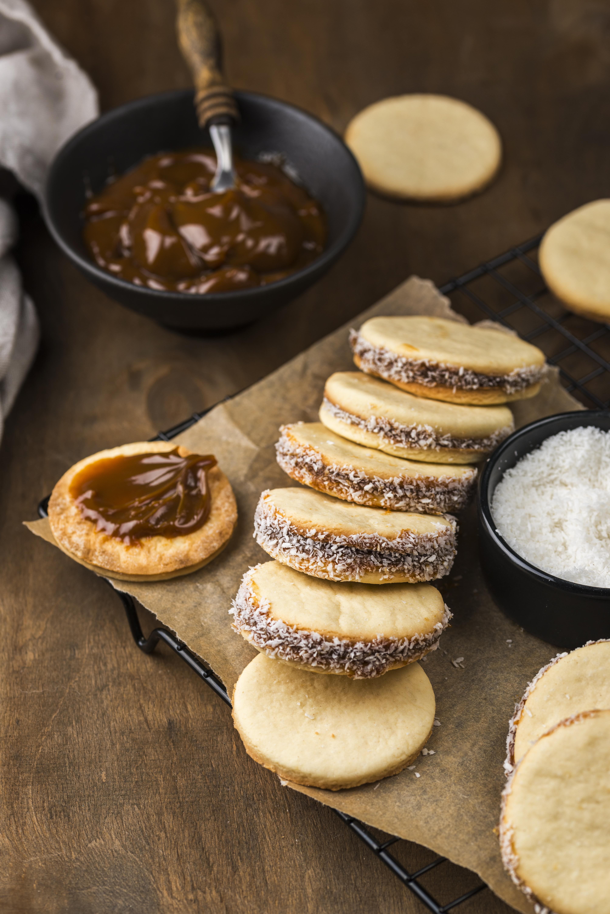

Home
Alfajores

Description
Alfajores is a traditional south american sweet, typically made of flour, eggs, shredded coconut, and most importantly, dulce de leche.
It is found mainly in South America, however it seems to have been perfected by the Argentinians.
Ingredients
- 2 ½ cups cornstarch
- 1 ⅔ cups unbleached all-purpose flour
- 2 teaspoons baking powder
- ½ teaspoon baking soda
- 1 cup unsalted butter, softened
- ¾ cup white sugar
- 3 egg yolks
- 2 teaspoons lemon zest
- 1 teaspoon vanilla rum
- ½ teaspoon vanilla extract
- ½ teaspoon lemon extract
- 1 (11.5 ounce) jar dulce de leche YUM
\
- ½ cup unsweetend shredded coconut
Steps
- Preheat the oven to 350 degrees F (175 degrees C). Line baking sheets with parchment paper.
- Whisk cornstarch, flour, baking powder, and baking soda together; set aside.
- Beat butter and sugar together in a large bowl with an electric mixer until light and fluffy. Beat in 2 egg yolks, one at a time, beating well after each addition; beat in third yolk along with lemon zest, vanilla rum, vanilla extract, and lemon extract. Gently fold in cornstarch mixture with a spoon, making a crumbly dough, until cohesive enough; press into a ball. Wrap dough in plastic wrap; chill 30 to 60 minutes.
- Roll dough out, using as little flour as possible, until about ¼-inch thick. (The dough will have an unusual consistency.) Cut dough using a small round cookie cutter. Continue pressing dough together, rolling, and cutting until all dough is used. Place cookies spaced ½-inch apart onto the prepared cookie sheets.
- Bake in the preheated oven until set but not browned, 7 to 10 minutes. Transfer cookies immediately to a wire rack to cool.
- Spread 1 teaspoon dulce de leche onto underside of 1 cooled cookie; sandwich with second cookie until caramel oozes out sides. Roll sides in shredded coconut. Repeat with remaining cookies, dulce de leche, and coconut.